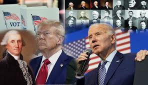

Siyasət Yenilikləri
Son dövrlərdə dünya siyasətində bir sıra mühüm yeniliklər baş verib.
Bir çox ölkələrdə seçkilər keçirilib və yeni liderlər və hökumətlər formalaşıb.
Beynəlxalq münasibətlərdə də dəyişikliklər müşahidə olunur, yeni ittifaqlar yaranır və mövcud əlaqələr yenidən qiymətləndirilir.
Bu siyasət yenilikləri qlobal səviyyədə təsir göstərir və gələcəkdə daha da əhəmiyyətli rol oynayacaq.